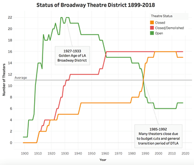

From 1899 to now, Downtown Los Angeles has seen a boom and bust of Cinematic Theaters. The concentration of many of these theaters was on S. Broadway, where at its peak 22 theaters were open at a given time. Following the Depression Era and WW2, changing tastes in American perceptions of theatre and the increase in other forms of entertainment led to the steady decline of the theatre district. In the late 1980s and early 1990s, rising rents and lowered populations living in DTLA led to a massive decrease in theaters opened on Broadway. Today, there is an effort to preserve, restore, and even reopen theaters in this now historical district of Los Angeles.
